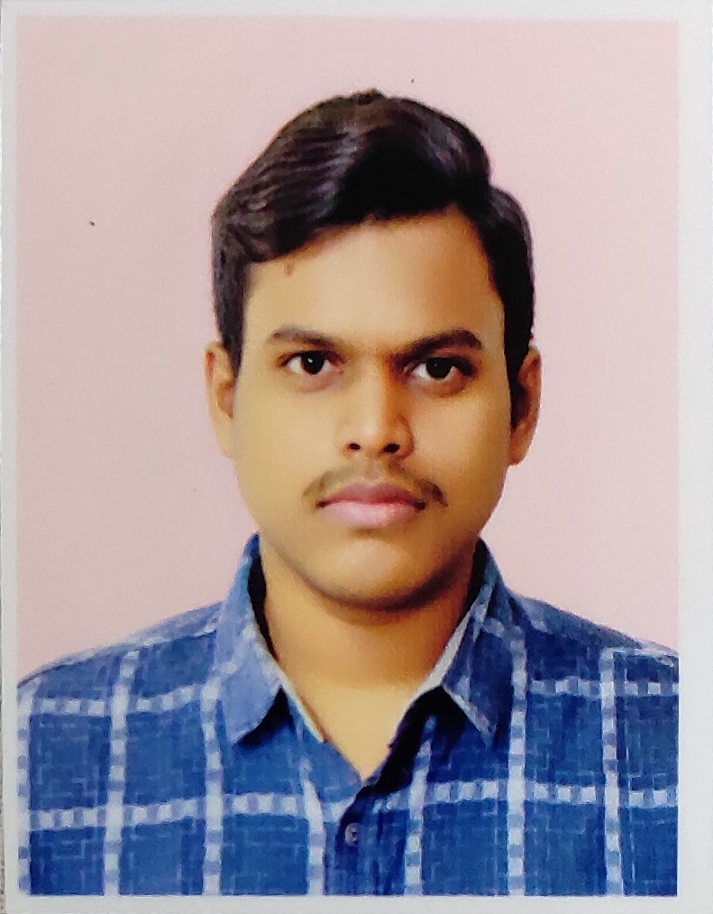

Anandasu Mourya Vardhan

Objective Statement:
I am a dedicated and passionate individual with a strong work ethic and a desire to succeed. I am a quick learner and always strive to improve my skills. I am a team player and enjoy working collaboratively with others to achieve common goals. I am confident in my ability to handle challenging tasks and am always looking for new opportunities to grow and develop.
Education:
- Bachelor of Technology in Information Technology
Vasireddy Venkatadri Institute of Technology Of Technology, 2019 - 2023
- Intermediate (Public Examination)
Sri Chaitanya Jr. College, 2017 - 2019
- 10th Class(Secondary Examination)
Chinmaya Vidyalaya
Work Experience:
-
Associate Software Engineer
Synlogica Solutions Private Limited
2025 - Present
Skills:
- Programming Languages: Java, Python, JavaScript
- Web Development: HTML, CSS, Bootstrap, React
- Database Management: MySQL, MongoDB
- Version Control: Git
- Operating Systems: Windows, Linux
Projects:
Farm2Home:
- Objective: Improve the customer experience in farm product delivery.
- Tech Stack: PHP, HTML, CSS, IDE, SQL, ER, XAMPP
- Solution: Designed a web application for customers to order farm products directly from home.
In-KRYPT:
- Objective: Use blockchain in peer-to-peer lending to eliminate intermediaries.
- Tech Stack: ASP.NET, HTML, CSS, IDE, SQL, SSMS, Blockchain
- Solution: Developed a secure P2P e-wallet money transfer system using blockchain architecture.
Certification:
- Global Certification on Google Cloud Programming
Strengths:
- Self-motivated
- Teamwork
- Dedicated
Others: